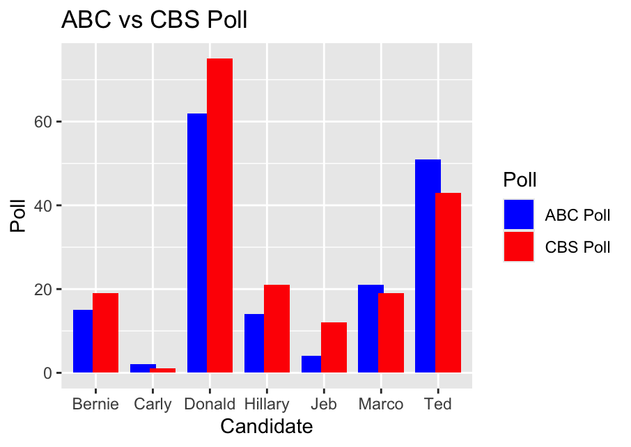

After comparing the two data sets given in this assignment, I found some clear discrepancies between the polls and the candidates given. For example, in this dataset Donald jumped from 62% to 75% from ABC to CBS poll showing a significant increase in rating while ted also had a similar increase from 52% to 43%. While these differences remain, the statics of both polls remained similar showing ABC with a mean at 24% and CBS at 27%.
The made-up data has a tremendous impact on the ability for an analyst to draw conclusions on the data. Made up data often follows no real-world trends making it difficult to impossible to impose a human and logical pattern to it. Without real world data it makes generating statistical patterns a waste of time and effort for the analyst.
One way an analyst might collect data such as poll data is to go to open-source polling platforms or trusted news sources. Many of these platforms have detected web pages or api’s to pull real world and valid data. When it comes to validating data, in my opinion the most important part is simply getting valid data in the first place from a trusted source. No. Matter how much effort goes into cleaning up data a good dataset will always provide better statistics than a poor one.

library(ggplot2)
Name <- c("Jeb", "Donald", "Ted", "Marco", "Carly", "Hillary", "Bernie")
ABC_poll <- c( 4, 62, 51, 21, 2, 14, 15)
CBS_poll <- c( 12, 75, 43, 19, 1, 21, 19)
#combine to df
df_polls <- data.frame(Name, ABC_poll, CBS_poll)
str(df_polls)
head(df_polls)
abc_mean <- mean(df_polls$ABC_poll)
abc_median <- median(df_polls$ABC_poll)
abc_range <- diff(range(df_polls$ABC_poll))
cbs_mean <- mean(df_polls$CBS_poll)
cbs_median <- median(df_polls$CBS_poll)
cbs_range <- diff(range(df_polls$CBS_poll))
cat("ABC Poll: Mean: ", abc_mean, " Median: " , abc_median, "Range: ", abc_range)
cat("CBS Poll: Mean: ", cbs_mean, " Median: " , cbs_median, "Range: ", cbs_range)
#Add a column for the difference between CBS and ABC
df_polls$Diff <- df_polls$CBS_poll - df_polls$ABC_poll
df_long <- data.frame(
Name = rep(df_polls$Name, 2),
Poll = rep(c("ABC Poll", "CBS Poll"), each = nrow(df_polls)),
Value = c(df_polls$ABC_poll, df_polls$CBS_poll)
)
# Plot
ggplot(df_long, aes(x = Name, y = Value, fill = Poll)) +
geom_col(position = position_dodge(width = 0.7)) +
labs(x = "Candidate", y = "Poll", title = "ABC vs CBS Poll") +
scale_fill_manual(values = c("ABC Poll" = "blue", "CBS Poll" = "red"))